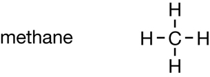
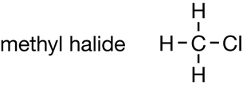
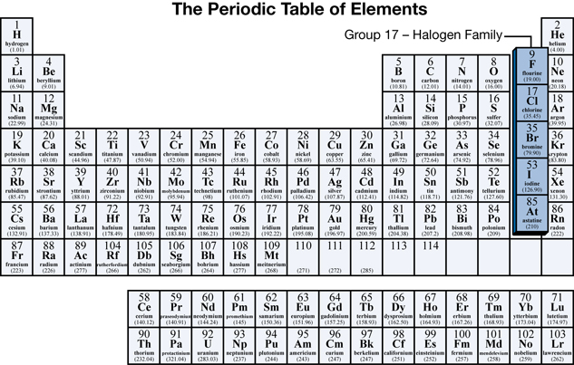
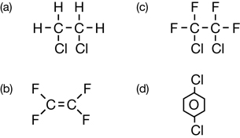
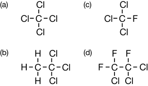
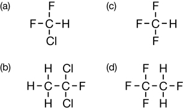

Module 6—Petrochemicals
 Explore
Explore
hydrocarbon derivative: a molecular compound of carbon, at least one other element, and, usually, hydrogen
functional group: a characteristic arrangement of atoms or bonds within a molecule that determines the most important chemical and physical properties of a class of compounds
In Lesson 1 you examined the chemical structures of many petrochemicals, and you organized the petrochemicals into groups. Can you recall what strategy you used to group these molecules? Did your strategy involve grouping all the molecules that had halogen atoms into one group and all the structures with oxygen atoms into another group? If so, you were grouping the petrochemicals into hydrocarbon derivative families.
Atoms other than carbon or hydrogen, or the presence of multiple bonds between carbon atoms in a hydrocarbon, create a functional group. In this module you will learn about the functional groups present in common petrochemical compounds.
You may recall from “Figure 2” on page 413 that petrochemical derivatives are created by altering hydrocarbons (or primary petrochemicals). Compare the following two illustrations:
Hydrocarbon |
Petrochemical Derivative |
 |
 |
How could you use the hydrocarbon on the left to create the molecule on the right? Describe the changes that need to occur to make the molecule on the left transform into the one on the right.

Organic compounds that contain halogen atoms are grouped as organic halides. Organic halides contain one or more atoms from the halogen group of elements. As mentioned in Get Focused, chlorofluorocarbons are an excellent example of an organic halide because the class contains both chlorine and fluorine.
Vinyl chloride is another petrochemical example of an organic halide. As these examples show, an organic halide’s name communicates the halogen(s) present in the substance. Later in this lesson you will learn how to apply the systematic naming system to organic halides.
 Try This
Try This
Refrigeration
Halogen atoms are added to hydrocarbons to produce a compound with unique properties. Consider the following molecules:
Methane |
CFC Molecule |
|
|---|---|---|
| Chemical Formula | CH4 |
CF2Cl2 |
| Boiling Point (°C) | −161 |
−29.8 |
TR 1. Can you identify a reason for the difference in boiling points between these two molecules?
TR 2. In a refrigeration system, refrigerants are compressed into their liquid form and allowed to vapourize. Explain how the vapourization of either of the substances shown in the table would enable them to act as refrigerants.
Save your response in your course folder, and submit a copy to your teacher.
 Read
Read
Read page 417 in the textbook to learn the effect that adding halogens to a hydrocarbon can have. Pay careful attention to the last paragraph and “Table 1” on page 417 to learn how to apply the systematic naming process to organic halides.
Work through “Sample problem 10.1,” “Communication example 1,” and “Communication example 2” on page 418 in the textbook.
Earlier in this lesson you considered the CFC molecule CF2Cl2. What is the systematic name for this molecule? Is it dichlorodifluoromethane or difluorodichloromethane—which halogen do you list first?
IUPAC rules state that when more than one type of halogen atom appears in a molecule's structure, the halogen prefixes are to be listed in alphabetical order. Therefore, the systematic name for CF2Cl2 is dichlorodifluoromethane.
 Self-Check
Self-Check
Sc 1. Complete “Practice” questions 1–5 on pages 418–419 in the textbook.
Sc 2. Write the systematic names for the organic halides listed in “Practice” questions 4.b., c., and d., and 5.a., b., and d. on pages 418–419 in the textbook.
Self-Check Answers
Contact your teacher if your answers vary significantly from the answers provided here.
SC 1.
Practice 1.

Practice 2.
- triiodomethane
- 3-chloromethylpropene
- dichloromethane
- 1,2,3-tribromopropane
- chlorobenzene
- phenylethene
You might have used names that contain redundancies; these are still correct. For example, 3-chloro-2-methylprop-1-ene is acceptable for b. above.
Practice 3.
- Chloroethene has a higher boiling point than ethene because it has stronger intermolecular forces. Firstly, it is polar so it exhibits dipole-dipole forces. Secondly, it has more electrons so its London forces are stronger.
- Chloroethene is likely more soluble than ethane because it is polar and water is a polar solvent.
Practice 4.

Practice 5.

SC 2.
4.b. 1,1,1-trichloroethane
4.c. trichlorofluoromethane
4.d. 1,1,2-trichloro-1,2,2-trifluoroethane
5.a. chlorodifluoromethane
5.b. 1,1-dichloro-2-fluoroethane
5.d. 1,1,1,2-tetrafluoroethane
 Reflect and Connect
Reflect and Connect
DDT (dichlorodiphenyltrichloroethane, a pesticide), Teflon (polytetrafluoroethylene, the non-stick coating used in cookware), and PVC (polyvinyl chloride, a type of plastic) are other organic halides. Chemical technologies like these have been very important in the development of your society and to your standard of living. However, there are also concerns related to the use of organic halides.
RC 1. Use the Internet to research organic halides and possible concerns related to their use. Why is there concern about exposure to organic halides that contain chlorine (also known as organochlorides)? To refine your search, try combining the common names of the chemical compounds listed in the paragraph above with other search terms.
Save relevant information that you collect in your course folder. You will revisit this information later in Module 6.